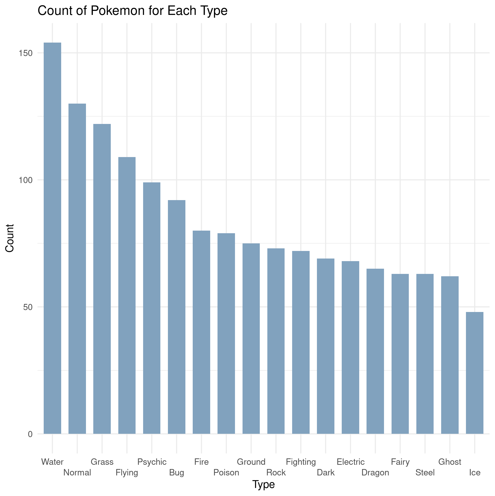
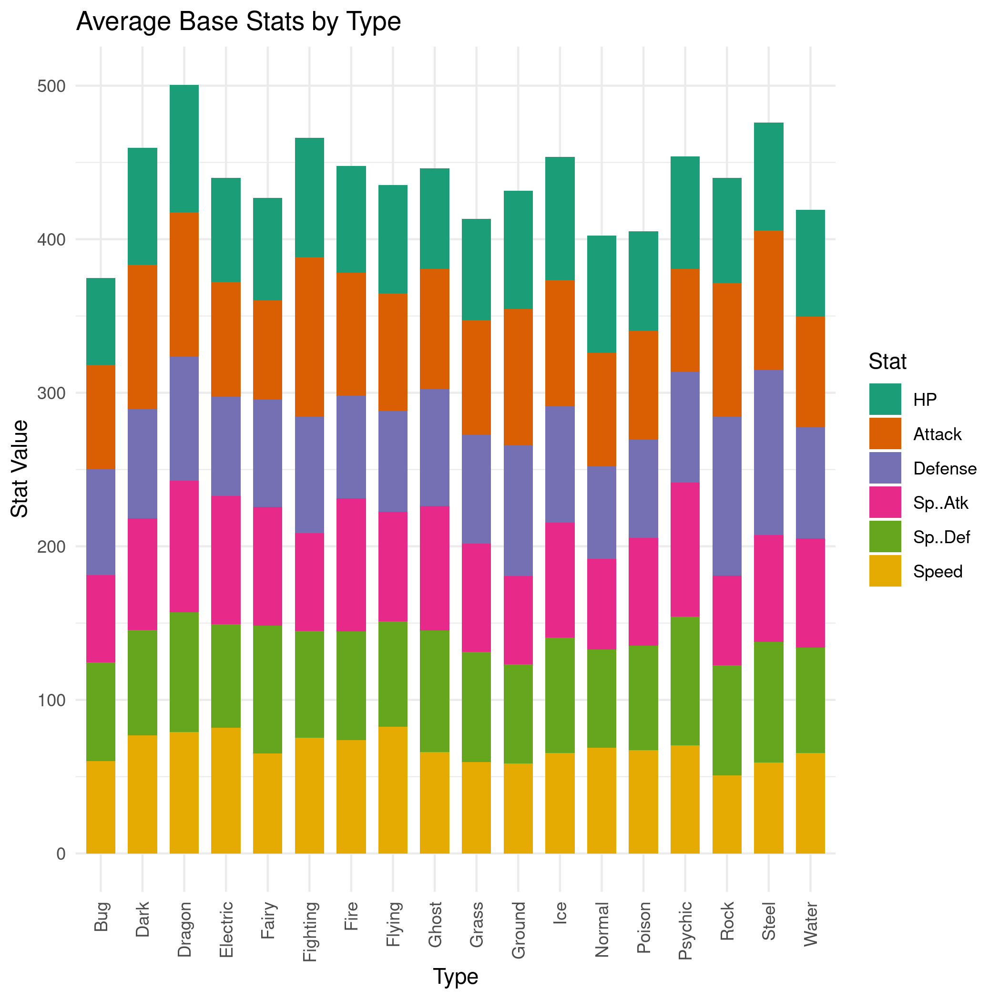
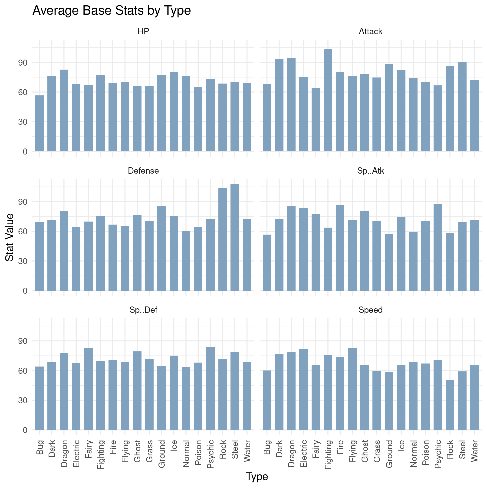
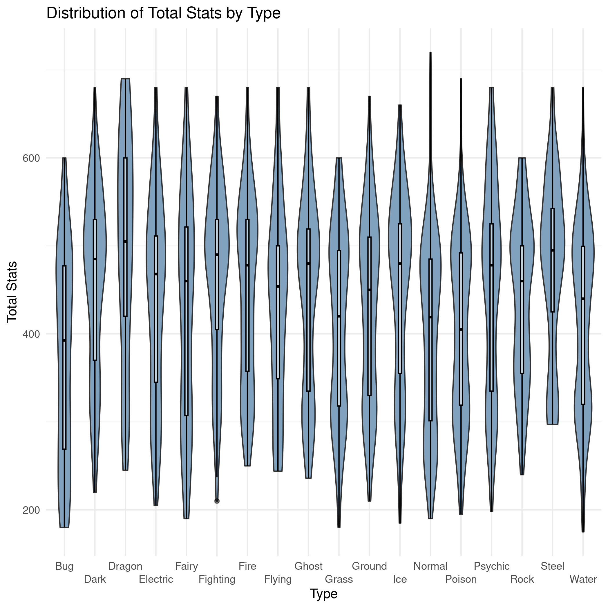
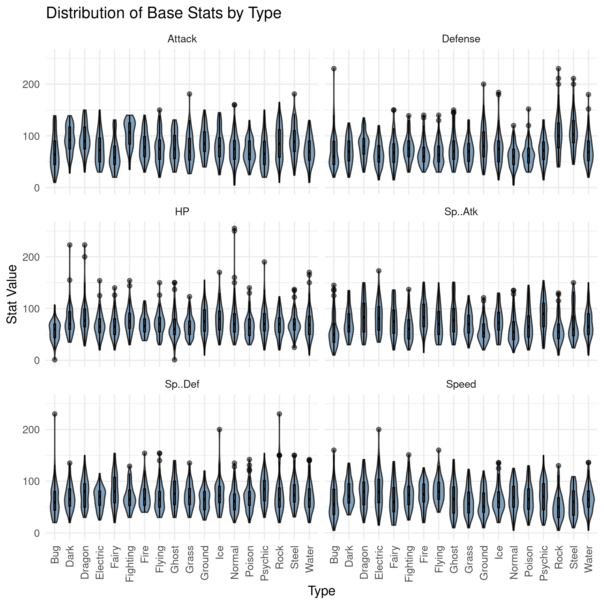

¶Introduction
Here, we investigate some of the data as it pertains to Pokemon type.
¶Load Libraries
Start off by loading the libraries we need.
# Load libraries library(dplyr) library(tidyr) library(ggplot2)
¶Read and Format Data
Read in the data we scraped in the previous steps. We also need to make sure to set some column types in order to group and summarize the data. The Generation and Evolution.Place columns are categorical, and the Has.Evolution column is boolean, so we need to specify those column types.
# Read the data pokedex <- read.csv('~/Projects/pokedex/data/pokedex_ext.csv',sep=',') # Change categorical columns pokedex$Generation <- as.factor(pokedex$Generation) pokedex$Evolution.Place <- as.factor(pokedex$Evolution.Place) pokedex$Has.Evolution <- as.logical(pokedex$Has.Evolution) # Show Pokedex data head(pokedex)
| Number | Name | URLs | Type.1 | Type.2 | Species | Height | Weight | HP | Attack | Defense | Sp..Atk | Sp..Def | Speed | Total | Type.3 | Has.Evolution | Evolution.Place | Maximum.Evolution.Count | Evolution.Index | Generation | Legendary.Status |
|---|---|---|---|---|---|---|---|---|---|---|---|---|---|---|---|---|---|---|---|---|---|
| 1 | Bulbasaur | https://pokemondb.net/pokedex/bulbasaur | Grass | Poison | Seed Pokémon | 0.7 | 6.9 | 45 | 49 | 49 | 65 | 65 | 45 | 318 | TRUE | 1 | 3 | 0.33 | 1 | ||
| 2 | Ivysaur | https://pokemondb.net/pokedex/ivysaur | Grass | Poison | Seed Pokémon | 1 | 13 | 60 | 62 | 63 | 80 | 80 | 60 | 405 | TRUE | 2 | 3 | 0.67 | 1 | ||
| 3 | Venusaur | https://pokemondb.net/pokedex/venusaur | Grass | Poison | Seed Pokémon | 2 | 100 | 80 | 82 | 83 | 100 | 100 | 80 | 525 | TRUE | 3 | 3 | 1 | 1 | ||
| 4 | Charmander | https://pokemondb.net/pokedex/charmander | Fire | Lizard Pokémon | 0.6 | 8.5 | 39 | 52 | 43 | 60 | 50 | 65 | 309 | TRUE | 1 | 3 | 0.33 | 1 | |||
| 5 | Charmeleon | https://pokemondb.net/pokedex/charmeleon | Fire | Flame Pokémon | 1.1 | 19 | 58 | 64 | 58 | 80 | 65 | 80 | 405 | TRUE | 2 | 3 | 0.67 | 1 | |||
| 6 | Charizard | https://pokemondb.net/pokedex/charizard | Fire | Flying | Flame Pokémon | 1.7 | 90.5 | 78 | 84 | 78 | 109 | 85 | 100 | 534 | TRUE | 3 | 3 | 1 | 1 |
¶Pokemon Type Frequency
I’m curious how many Pokemon of each type there are. I suspect most Pokemon will be water or grass type Pokemon.
Of note here, some Pokemon have multiple, up to three, different types. Those are stored in Type.1, Type.2, and Type.3. To count the Pokemon of each type, we’ll need to either only count up the Pokemon of
Type.1, or we can pivot to a longer table and Pokemon with multiple types will have multiple entries. I’ll pivot to a longer table, and then count the Pokemon of each type.
# Get a count of of each type type_count <- pokedex %>% pivot_longer(c("Type.1","Type.2","Type.3"),names_to="Type.Number",values_to="Type") %>% drop_na("Type") %>% group_by(Type) %>% count() %>% arrange(desc(n)) # Show a bar plot of type counts ggplot(type_count, aes(x = reorder(Type, -n),y=n, ymin=0)) + geom_bar(stat="identity",position="dodge",width=0.7,fill="#81a2be") + ggtitle(label="Count of Pokemon for Each Type") + xlab("Type") + ylab("Count") + scale_alpha(guide = 'none') + theme_minimal() + scale_x_discrete(guide = guide_axis(n.dodge = 2)) # Save image ggsave("images/type-counts.png",bg="white")

As expected, water and grass are among the most frequent classes. I figured “Normal” Pokemon would make an appearance up top, but I didn’t quite expect it to be the second most common type. I definitely didn’t expect psychic Pokemon to be so common either.
¶Mean Base Stats by Type
Now, I’d like to view the average stats of each Pokemon to see which types of Pokemon are typically the strongest. I’d expect that dragon type and steel type are among the top, from my experience with the game. Again, I’ll pivot the table so that Pokemon with multiple types have those multiple types represented.
# Calculate mean stats by Pokemon type type_stats <- pokedex %>% pivot_longer(c("Type.1","Type.2","Type.3"),names_to="Type.Number",values_to="Type") %>% drop_na("Type") %>% group_by(Type) %>% summarize_at(vars(HP:Speed),mean) %>% pivot_longer(-1,names_to="Stat",values_to="Value") # Specify Stat as a factor and set order type_stats$Stat <- factor(type_stats$Stat, levels=c("HP", "Attack", "Defense", "Sp..Atk", "Sp..Def", "Speed")) # Plot Pokemon Stats as a stacked bar ggplot(data = type_stats, aes(x=Type, y=Value, fill=Stat, ymin=0)) + geom_bar(stat="identity",position="stack",width=0.7) + labs(title = "Average Base Stats by Type", y = "Stat Value", x = "Type") + scale_fill_brewer(palette="Dark2") + theme_minimal() + theme(axis.text.x = element_text(angle = 90, vjust = 0.5, hjust=1)) # Save image ggsave("images/type-stats.png",bg="white")

Dragon and steel Pokemon did indeed come out among the top, but dark, fighting, and ice Pokemon are also quite strong in terms of their average total base stats. Bug, normal, and poison Pokemon are among the weakest, which is not terribly surprising.
Rather than plotting this as a stacked bar chart, I’d like to see the different stats all separated out. I could make a clustered bar chart, but with as many types as we have here, that would be a very wide, messy chart. Let’s instead make subplots using facet_wrap.
# Plot each Pokemon Stat on an individual bar chart ggplot(data = type_stats, aes(x=Type, y=Value, ymin=0)) + geom_bar(stat="identity",position="dodge",width=0.7,fill="#81a2be") + labs(title = "Average Base Stats by Type", y = "Stat Value", x = "Type") + facet_wrap(~Stat,ncol=2) + theme_minimal() + theme(axis.text.x = element_text(angle = 90, vjust = 0.5, hjust=1)) + scale_fill_brewer(palette="Dark2") # Save image ggsave("images/type-stats-2.png",bg="white")

Now we can better see the distributions of stats for different types.
- Dragon Pokemon have the highest HP.
- Fighting type Pokemon have the highest attack.
- Rock and steel Pokemon have the highest defense.
- Psychic, dragon, fire, and electric Pokemon have the highest special attack.
- Psychic, fairy, steel, and ghost Pokemon have the highest special defense.
- Flying, electric, dragon, and dark Pokemon have the highest speed.
¶Base Stats Distribution
Rather than looking at only the means, let’s also look at how the stats are distributed for each Pokemon, stating with the total base stats.
pokedex %>% pivot_longer(c("Type.1","Type.2","Type.3"),names_to="Type.Number",values_to="Type") %>% drop_na("Type") %>% ggplot(aes(x=Type,y=Total)) + geom_violin(width=0.8,fill="#81a2be") + geom_boxplot(width=0.1, color="black", alpha=0.5) + scale_fill_brewer(palette="Dark2") + ggtitle("Distribution of Total Stats by Type") + xlab("Type") + ylab("Total Stats") + theme_minimal() + scale_x_discrete(guide = guide_axis(n.dodge = 2)) # Save image ggsave("images/type-total-stats-violin.png",bg="white")

Almost every type has an hourglass distrubution, likely because many Pokemon are relatively weak or strong depending on where they are in their evolution chain. The box and violin plot indicates again that dark, ragon, fighting, ice, psychic, rock, and steel Pokemon are not only among the strongest Pokemon on average but that there are many Pokemon with total base stats towards the stronger end of the distribution.
Finally, let’s look at each different stat separately, rather than just the total stats.
# Calculate mean stats by Pokemon type pokedex %>% pivot_longer(c("Type.1","Type.2","Type.3"),names_to="Type.Number",values_to="Type") %>% drop_na("Type") %>% pivot_longer(c(HP:Speed),names_to="Stat",values_to="Value") %>% ggplot(aes(x=Type, y=Value, ymin=0)) + geom_violin(width=0.8,fill="#81a2be") + geom_boxplot(width=0.1, color="black", alpha=0.5) + labs(title = "Distribution of Base Stats by Type", y = "Stat Value", x = "Type") + facet_wrap(~Stat,ncol=2) + theme_minimal() + theme(axis.text.x = element_text(angle = 90, vjust = 0.5, hjust=1)) + scale_fill_brewer(palette="Dark2") # Save image ggsave("images/type-stats-violin.png",bg="white")

Nothing here is incredibly new from what we showed with the mean stats before. There’s a lot going on here, but it really just accentuates the information from the mean stats. I do prefer this view of the stats though, as it shows just how much more attack fighting Pokemon have, defense rock and steel Pokemon have, and how much Special Attack psychic Pokemon have, and how often that is the case.